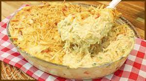

Fricassê de frango e milho

Ingredientes
- 200 g de milho em lata
- 200 g de nata
- 200 g de queijo de barrar
- 2 peitos de frango cozidos e desfiados
- 50 g de azeitona picada
- sal QB
- 150 g de queijo mozarela ralado
- 100 g de batata palha
Modo de preparo
- Bater no liquidificador o milho, a nata, o queijo de barrar para formar um creme.
- Em um bolw, misturar o creme com o frango, a azeitona e o sal.
- Transferir para uma travessa, cobrir com queijo ralado e levar ao forno até borbulhar.
- Cobrir com batata palha e servir.